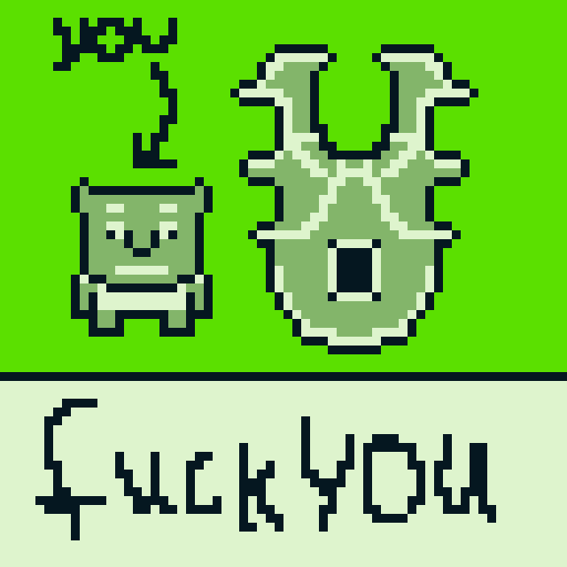
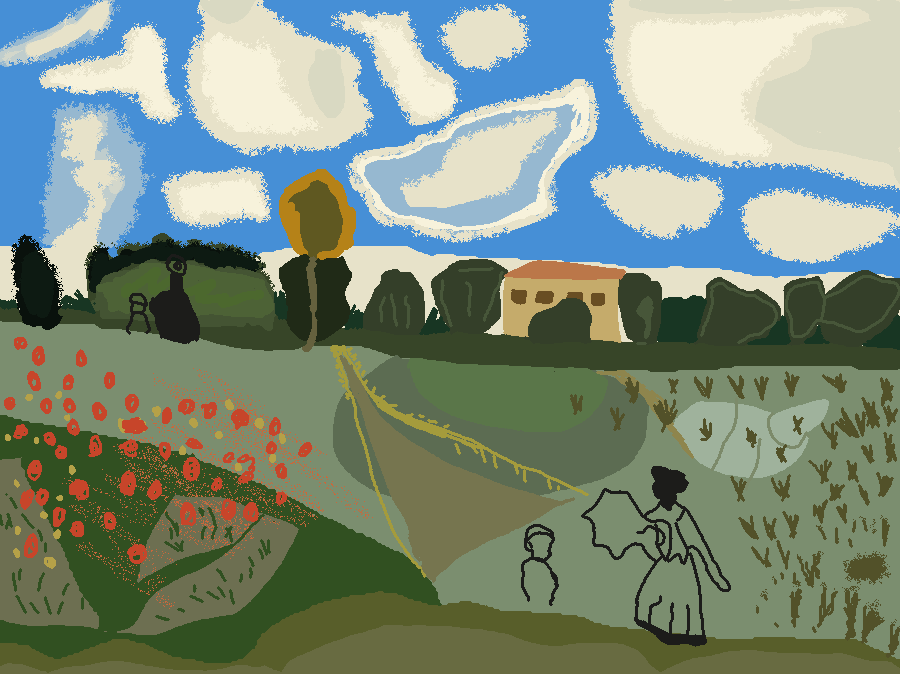
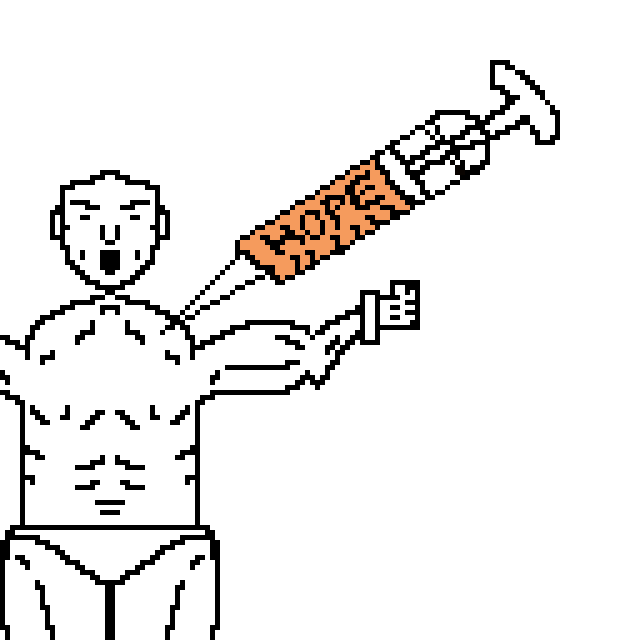
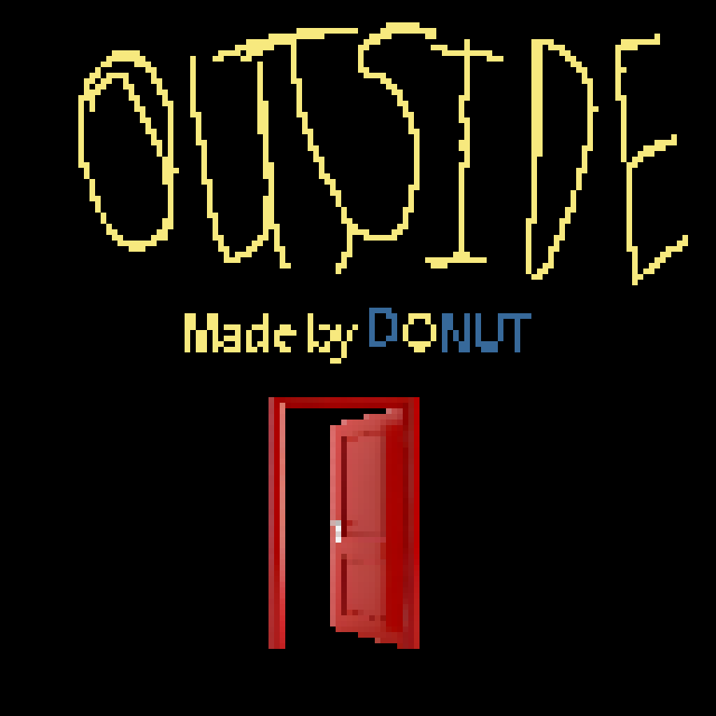
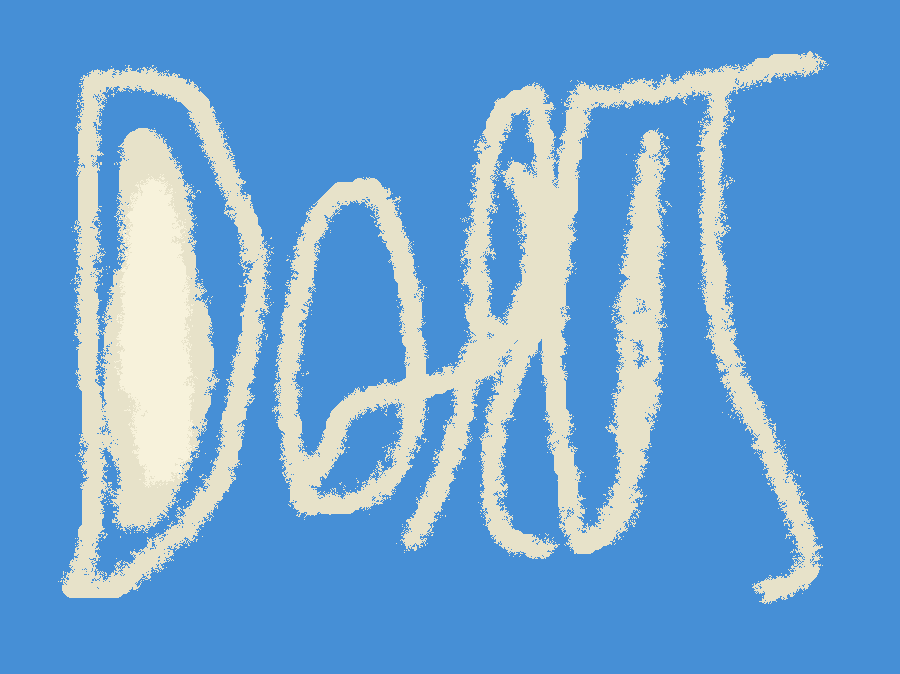

I know I know I know, this guy has been gone for what like 4 whole months I knowww but a lot has been happening in my life what can I say.
Its been a very hectic and weird year for me in terms of just who I am and what I stand for in terms of beliefs, People and Myself. Lots of character
building which is a good thing I hope, but I have changed I have become more honest with my self which is something I feel like a lot of people need to
adapt as well. Anyhow I am feeling less hopeful and more ecstastic hence this new color, fills you with energy doesn't it.
This blog is a little different as its more of like a bunch of updates on what has been happening with me in the past 4 months and stuff I have been working on,
enough teasing ENOUGH saying things are coming its TIME to drop things and give you sort of like a road map that I hope to follow until the next blog post. ITS ONNNN
Still collecting nature pics lmao
Pixel Art
For the longest while I have been meaning to get into drawing or art or anything in general. I am not a good artist I will be honest,
I am not great at drawing and it sucks. I have been trying for ages but I never had the commitment to realy get into it. I have noticed that
learning a new skill is pretty much the same as learning a new language. Initially you are absolutely struggling to understand anything but then as
you get the hang of things thats when you really start to sky rocket and its only a matter of time and determination to really get good at it. Ok this
really does not relate to learning a language so let me phrase it in a way better way. At first you understand nothing, you begin to understand a bit and
now you understand too much! Thats language for you (I feel like a 50 year old facebook mom writing this). It took me a leap of faith to FINALLY get back into
art and more precisely get into pixel art. I am not good or great but I have made some pieces I am pretty proud of.
Here is some stuff I have cooked up.

This was when a friend of mine dared me to draw a shield in a gameboy style so I went out of my way to prove him wrong. Excuse the language I was rather
passionate with this lmao
In this piece I discovered that in order to really make good pixel art you NEED to keep things simple. Stick to a good color palette and stick to a
suitable canvas size. I am really emphasizing on sticking to a suitable canvas size and you are about to find out why in the next piece.

This is supposedly "pixel art" but I chose such a huge canvas size that it really lost pixelated look and now it looks like something made on
MS paint. This took me hours to make so I was kinda devastated at the end I was like damnnnnn wtf am I doing. Yes this is inspired by that popular painting.

HOPE! I was mostly goofing around with diagonals and saw a pic on twitter I wanted to recreate. The proportions look terrible I know.
Andddddddd the final piece I can show today is a walking animation! I learned a lot of stuff regarding animation actually, its like a whole
science or something. There is building up, speeding up things, number of frames to use, when to show effect and a lot more intriguing things to
animation that I hope to learn more of as time passes. I was really proud of this actually.
There are other pieces of pixel art I have worked on but have not shown here for a good reason. They will be used in my next project which is
called......
OUTSIDE
YESSSSSSSSS I can finally announce something new, I have been talking about working on stuff for like a good year now but never really
managed to get past the conception stage but this one is ONNNNNNN. Its a narrative driven project that I am working on, I can't exactly say much
because I really don't want to spoil it but I have hope in it and I genuinely don't care if its bad or good I just want to create something that
tells a story. Can't expect things to be insanely great from first try.
Haven't shown much BUT I will show you this little poster.

Donutroplis
This doesn't need introduction if you have read my previous Blog Post. In terms of donutroplis it seems like I have reworked
it a thousand times yet I have never really struck gold with it. I feel so certain that the idea is good but the execution is just horrendous. A couple of days ago
I finally got into hypnospace outlaw after knowing about it for like a good 5 years and I think I have finally realized what the issue with Donutroplis is.
Its WAY too focused on people and not itself which is why I have decided I will probably fully remake Donutroplis in the future and make it mostly single player
oriented with the capabilit of still interacting with people online. When I made Donutroplis I gave people too much freedom to a point where they really
just don't exactly know what to do and I have discovered that a good 99% of the people who have used it haven't even really got as far buying 1 single piece of furniture
in other words most of them haven't even spent more than 5 minutes on it because they legit had no clue what exactly they were supposed to do.
They checked out a bunch of
places played through some of the mini games and then never touched the whole project again which was a huge bummer for me. That alongside the horrible intro
screen that I JUST CAN'T seem to get right is what really deterred people away. I once tried advertising the game on reddit and it was just such a horrible failure I felt
insecure about it for a while but life is really just failing until you succeed so I will keep trying.

Acclivitous Folk
This was the first game I ever announced which you can read about here. andddd
I have never really continued working on it again, the idea is there but the execution (a trend is forming) is not exactly there.
I have been constantly trying to create a unique and intriguing combat system but I feel like with the limitations of the web and me just not
really having commitment to the project I just can't seem to get it right but I am very very certain once I eventually get a combat system working
I can easily finish the game. Almost all of the issues I once had with the game I am now fully capable of doing so I guess maybe soon this year??? who knows
That's all
There have been a ton of other projects I didn't talk about cause they still haven't made it past the conception stage but I might
talk about them later if they ever see the light of day is that the saying or the day of light whats the saying again